AI Academy · Level 1 · Grade 6 · Week 21 · Student lesson
Good Data, Bad Data
Learn to understand, design, build, test and explain AI systems responsibly.
Project: Helpful Classroom Sorter
Before you start
Week 3: measurements require units and a consistent method.
Plan time to read, investigate and explain. Keep predictions separate from observations.
Student lesson · 1 of 16
Your mission
Your learning target
I can check records against a stated format, unit and meaning before using them.
I can distinguish an evidence-based correction from an unsupported guess.
I can keep original values and a change log, then report what remains unresolved.
Remember before reading
Close your notes first. A rough first answer helps us choose the right starting point; it is not a score for your ability.
Without opening the old lesson, explain one key idea from Recommendations. Give an example and a mistake that the idea helps you avoid.
Without opening the old lesson, explain one key idea from Confidence Is Not Correctness. Give an example and a mistake that the idea helps you avoid.
Without opening the old lesson, explain one key idea from Save New Examples for Testing. Give an example and a mistake that the idea helps you avoid.
After trying, check the relevant lesson or ask your teacher. Change the part of your explanation that the evidence shows was wrong.
Coverage, correctness, and relevance matter more than raw quantity.
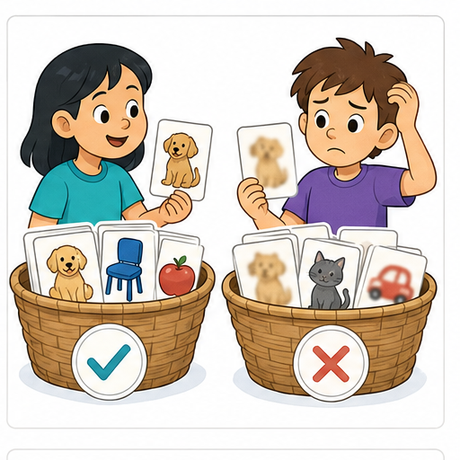
Learner name:
Readiness for the connected explanation
A recommender needs availability, but that field is blank. Can the highest preference score establish that the item is available? Explain.
This week’s end goal
By the end, I can repair data with traceable evidence while preserving valid zero and unknown.
Student lesson · 2 of 16
Notice the evidence
PICTURE STORY
Look Closely Before You Explain
Pictures give clues; evidence tells us what the clues mean.

What do you notice?
Name three visible details without explaining them yet.
Circle the detail most connected to the system's decision.
Name one detail that may be decoration or distraction.
Make a first prediction and state the clue that supports it.
My observations, prediction, and evidence:
A closer explanation
A tidy table can still contain wrong information. Validation checks whether a record follows a schema. A schema says which fields are required and what their values mean. Passing these checks makes a record usable for a stated task; it does not prove that the measurement or claim is true.
Our fictional RampLog records one ramp trial per trial ID. The fields are trial ID, height in centimetres, travel in centimetres and source card. Height must be a whole number from 1 through 10. Travel must be a whole number from 0 through 10. The source card identifies the original observation. Repeated trial IDs need investigation before counting trials.
The purpose is to count trials whose travel is at least 4 cm. A measured zero means no travel; a blank means no value was recorded. Never silently replace a blank by zero. Use only the invented records here; no personal information is needed.
Student lesson · 3 of 16
See how it works
VISUAL MECHANISM
Input → Process → Output
Follow the information instead of imagining magic inside the machine.
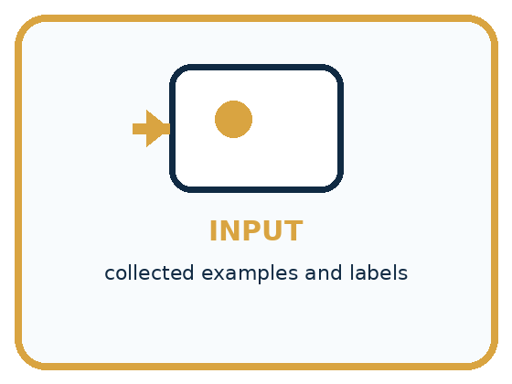
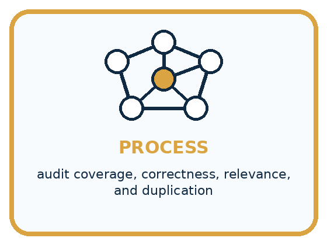
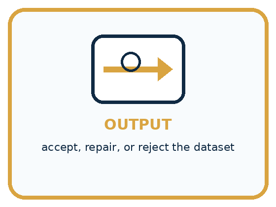
INPUT collected examples and labels
PROCESS audit coverage, correctness, relevance, and duplication
OUTPUT accept, repair, or reject the dataset
Draw a fresh example with all three stages:
A closer explanation
Preserve the original and explain each decision
The complete raw table is T1: height 4, travel 3, card C1; T2: height 60, travel 5, card C2; T3: height 5, travel blank, card C3; T4: height 6, travel 0, card C4. A second export row repeats T1 with height 4, travel 3 and C1. C1 confirms one trial T1, not two. C2 reads height 6 and travel 5. C3 has no travel measurement. C4 reads height 6 and travel 0.
Work in a separate corrected copy. Record T2 height 60 to 6, evidence C2, transcription error, reviewer and review date. Link the repeated T1 export row to the first T1; count that single trial once and keep both raw rows. Do not remove two different trials merely because their measured numbers match.
Connect the picture and the explanation
Point to the input, the deciding step and the result in this week’s visual. Explain the same step in ordinary words. A picture helps when you can say what each part represents.
Student lesson · 4 of 16
Compare the cases
PICTURE GALLERY
Four Cases, Four Clues
Use the visual cue, then read the evidence carefully.
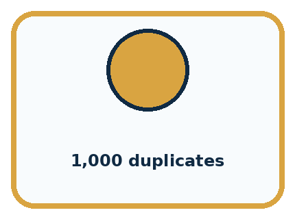
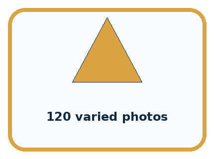
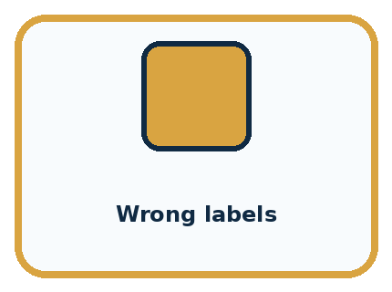
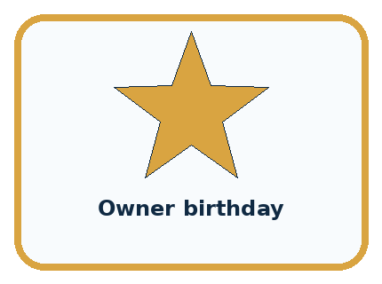
CASE 1 — 1,000 duplicates Clue: high count, low variety. Meaning: weak coverage.
CASE 2 — 120 varied photos Clue: settings and types represented. Meaning: stronger coverage.
CASE 3 — Wrong labels Clue: targets conflict with reality. Meaning: correctness failure.
CASE 4 — Owner birthday Clue: unrelated to animal type. Meaning: irrelevant/private.
Which two pictures are easiest to confuse? What evidence separates them?
Change one thing in the pictured case
Change: The source log gives B only as bare 200 with no unit.
Prediction: B remains unresolved rather than becoming 20 cm.
Reason: Without a confirmed unit, division by 10 would be an unsupported assumption.
Student lesson · 5 of 16
Words that unlock the idea
VOCABULARY
Words You Can See and Use
The badge is a memory cue; the definition does the real thinking work.
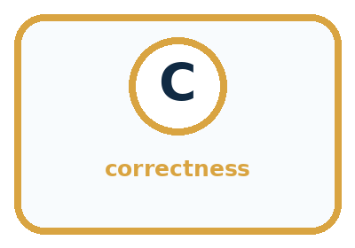
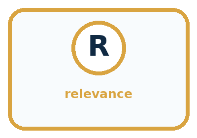
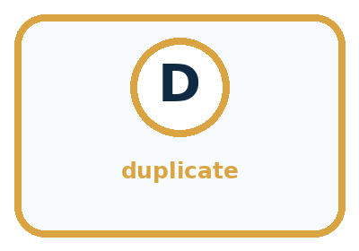
| Word | Meaning | My example |
|---|---|---|
| coverage | how well examples represent needed situations | |
| correctness | whether records and labels are accurate | |
| relevance | whether data supports the task | |
| duplicate | repeated record adding little new coverage |
Misconception detective
CLAIM TO REPAIR The bigger dataset must be better.
Use one vocabulary word and one piece of evidence to repair it:
Words used in the closer explanation
| Word | Meaning |
|---|---|
| Schema | A description of required fields, formats, units and allowed values |
| Validation | Checking a record against stated requirements |
| Provenance | A record of where information came from |
| Correction | A change supported by evidence about the intended value |
| Change log | A record of what changed, why, when and on what evidence |
Student lesson · 6 of 16
Follow a worked example
WORKED EXAMPLE
Watch the Reasoning, Not Just the Answer
Every step connects a claim to observable evidence.

STEP 1 — OBSERVE collected examples and labels
STEP 2 — TRACE audit coverage, correctness, relevance, and duplication
STEP 3 — CONCLUDE accept, repair, or reject the dataset
What new evidence could change this answer?
A closer explanation
| Problem | Permitted action here | Unsupported shortcut |
|---|---|---|
| Invalid height 60 | Check C2; correct to 6 | Guess by deleting a zero |
| Missing travel | Keep missing; seek source | Fill with the class average |
| Repeated T1 ID | Confirm one trial on C1; count once | Treat every repeated number as a duplicate |
| Two sources disagree | Flag conflict; ask for resolution | Pick the value that improves the result |
A conversion changes units while preserving the quantity. If an authorised source records 50 mm, that is 5 cm because 10 mm equals 1 cm. Write the original unit, conversion and resulting unit in the log. A bare value 50 without a known unit does not justify assuming millimetres.
A plausible value can still be a transcription error: 7 would pass the height rule even if its source said 6. Conversely, an unusual but supported value is not automatically wrong. Checking format and checking agreement with a source are different jobs. A source can itself contain an error, so retain its identity and any unresolved concern.
Learn from the worked case
Cover the result before checking it. Say what is given, choose the procedure, and follow one step at a time. Then uncover the result and explain your first mismatch. Ask why a step is allowed, not only what number it produces.
A pictorial worked case: Good Data, Bad Data
A fictional toy-car distance table needs cleaning before use.
The facts we will use
Contract: unique run ID; whole distance 0–30 cm. Raw rows: A=0 cm, B=200 mm, C=blank, another A=0 cm.
Source log confirms one A run and B’s original measurement of 200 mm; C has no measurement.
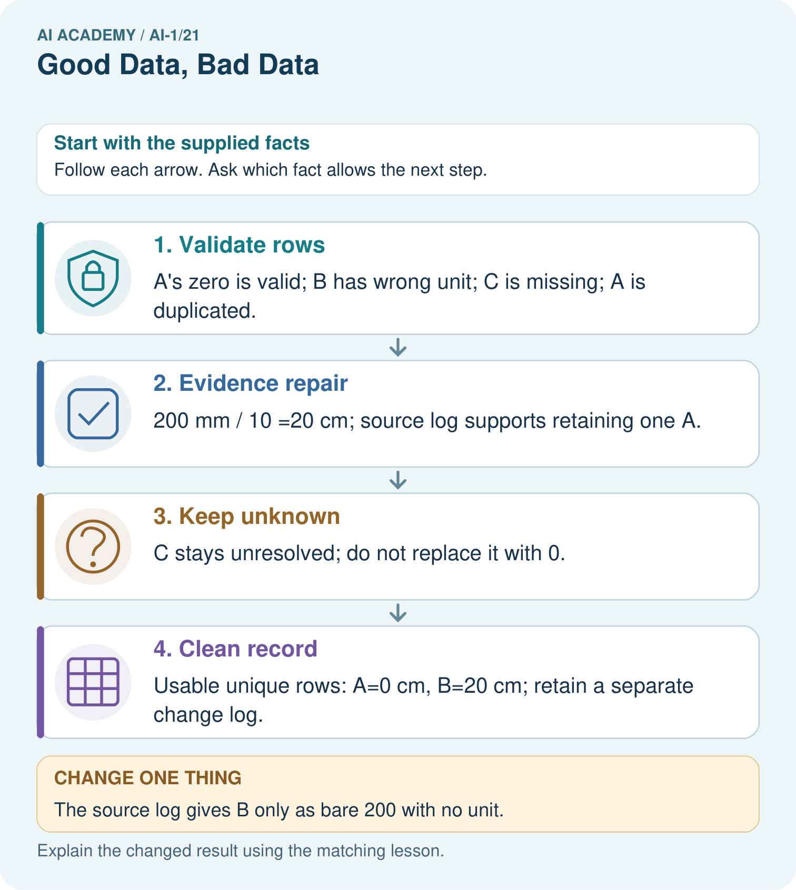
Read the picture one step at a time
Why this result follows
Cleaning is not permission to make inconvenient values plausible. The source log supports a unit conversion and removal of a duplicate copy. Zero means a measured zero distance; blank means no supplied measurement. Keep the raw table and explain every change so someone can reconstruct what happened.
What this example does not establish
A clean table can still contain measurement or labelling errors that these checks do not detect.
Read the labelled picture: Which repairs are evidence-backed in the original case, and which row must remain unknown?
Change one thing: The source log gives B only as bare 200 with no unit. Predict the result before checking the explanation. What remains the same?
Student lesson · 7 of 16
Find and repair a mistake
COMPARE
Same Result, Different Reason
A comparison helps reveal the true concept boundary.
| Case | Evidence | What it shows |
|---|---|---|
| 1,000 duplicates | high count, low variety | weak coverage |
| 120 varied photos | settings and types represented | stronger coverage |
| Wrong labels | targets conflict with reality | correctness failure |
| Owner birthday | unrelated to animal type | irrelevant/private |
Repair two tempting claims
CLAIM A The bigger dataset must be better.
Repair:
CLAIM B Clean formatting means the data is correct.
Repair:
A closer explanation
After changing a value, run the schema checks again and compare the corrected copy with the raw copy and log. Recount distinct trials. Check that every correction has evidence and that zero, missing and conflict remain separate. A repair can introduce a new mistake if a value is changed in the wrong row.
The corrected RampLog supports a statement about its three assessed trials. It does not establish how every ramp or future trial behaves. Better formatting cannot create missing observations or broaden what was sampled. Next week asks which cases a dataset actually covers.
Student lesson · 8 of 16
Practise together
GUIDED PRACTICE
Try It, Check It, Explain It
Use support now so you can succeed independently later.

Explain how the picture story demonstrates this idea: Coverage, correctness, and relevance matter more than raw quantity.
Use a fresh example to explain coverage.
Trace a new input → process → output example.
Find and repair the error in: Clean formatting means the data is correct.
Invent one edge case and name the safe response.
A closer explanation
After the documented correction and confirmed duplicate handling, RampLog contains four distinct trials: T1, T2, T3 and T4. Three have recorded travel. T1 has 3 cm, T2 has 5 cm and T4 has 0 cm. Only T2 meets at least 4 cm, so the result is 1 of 3 assessed trials, with 1 trial missing travel. Do not report T3 as a failure or hide it from the account.
Describe which records entered the calculation and why. Keep unresolved records visible in a separate status list. A new measurement is a new observation with its own time and identity; it should not be passed off as the missing observation from an earlier trial.
Practise with less help: Write a traceable correction
Use workbook W2 for the connected example “Data quality and documented repair”. First fill the input and rule boxes. Try the middle steps before asking for a hint. After a hint, try the next step yourself.
| Plan | Do | Check |
|---|---|---|
| What is given? Which rule or procedure applies? | Record each intermediate step. | Does the result follow? What remains unknown? |
Explain your trace to a partner. Your partner points to one step to check. Swap roles on the next case. Each person writes their own explanation.
Check your reasoning
Use the worked case for Data quality and documented repair. Proposed explanation: “Every valid value is true”. Decide whether this explanation is supported. Point to the step or supplied fact that decides; explain your repair if needed.
Answer on your own before discussion. If you are unsure, say which step you need help with.
Explain the picture
Which repairs are evidence-backed in the original case, and which row must remain unknown?
This is supported practice. Keep the separately named independent case for an attempt before feedback.
Student lesson · 9 of 16
Run the investigation
EXPLORER LAB
Dataset Quality Audit
Predict first, test honestly, and explain what the evidence means.

State your prediction before the result is known.
Complete the task: Audit two mini datasets and choose the safer one.
Keep a normal case and an edge case clearly separated.
Record what happened—even when it does not match your prediction.
Explain the result, one limitation, and the next useful test.
| Case | Prediction | Observed result | What it means |
|---|---|---|---|
| Normal | |||
| Edge |
Plan → try → check
Before trying: what do I expect, and why? While trying: which step could first go wrong? Afterwards: what did I actually observe, and what should change? Keep “not run” if you only traced the procedure.
Student lesson · 10 of 16
Build your understanding
PRACTICE LADDER
Climb from Recall to Defense
Each step asks for a stronger kind of understanding.

RECALL Define coverage.
EXPLAIN Coverage, correctness, and relevance matter more than raw quantity.
TRACE Show the input, process, and output.
DIAGNOSE Repair: The bigger dataset must be better.
TRANSFER Apply the idea to a new home or classroom case.
CREATE Design one revealing test.
DEFEND Give a claim, evidence, mechanism, limit, and safe action.
Student lesson · 11 of 16
Connect your project
PROJECT
Helpful Classroom Sorter
Build one coherent system across the year, one evidence-based decision at a time.

What real classroom need does this serve?
What information is necessary—and what should stay private?
What happens inside the process?
What normal and edge cases will you test?
When should it say not sure or ask a person?

My project decision:
Evidence for your project
Keep raw sorter inputs, validated records and an evidence-linked repair log as different artifacts.
Student lesson · 12 of 16
Show what you know
MASTERY
Fresh-Case Independent Proof
Complete this after teaching and guided practice have ended.

□ Name or draw the fresh case.
□ Trace input, process, and output.
□ State the conclusion and strongest evidence.
□ Name one limit, failure, missing clue, or fairness/privacy concern.
□ Explain one safe next action or improvement.
Independent evidence:
My level: □ Not yet □ With one hint □ Independently □ I can teach it
Student lesson · 13 of 16
Study a complete case
Week 21 Worked case
Use the supplied details to practise the weekly concept before attempting the independent question. This case extends the illustrated lesson.
The situation
Ordinary pencil lengths are recorded as 12 cm, 14 cm, blank and 130 cm.
The question
What needs checking? May 130 silently become 13?
Worked explanation
Investigate missing and unusually large values using the source and units. Do not invent a repair. Document verified corrections.
Explain it in your own words
Which detail supports the answer, and why does it matter?
Trace the supplied case visually
Check suspicious data before changing it
| Evidence or stage | Value or result |
|---|---|
| 12 cm | Plausible recorded length |
| 14 cm | Plausible recorded length |
| Blank | Missing measurement |
| 130 cm | Check source and units |
Ordinary pencil lengths are recorded as 12 cm, 14 cm, blank and 130 cm.
What needs checking? May 130 silently become 13?
Investigate missing and unusually large values using the source and units. Do not invent a repair. Document verified corrections.
Student lesson · 14 of 16
Try a new case independently
Independent case: Audit an independent paper-plane log
Each flight ID must be unique; distance is a whole number from 0 through 20 cm. Raw rows: F1 8 cm; F2 120 cm; F3 blank; F4 0 cm; another F1 8 cm. Source S1 confirms one F1 flight. S2 says F2 travelled 12 cm. S3 is blank. S4 confirms zero. Preserve the raw rows, describe supported repairs and give the number of distinct flights. Report how many assessed flights travelled at least 10 cm, including missing records separately.
Attempt this case before feedback. Record any help. Earlier examples below are further practice; a case already practised with feedback cannot establish fresh transfer.
Week 21 Independent application
Close the worked explanation. Apply the idea to this different question without copying.
A table labels a cat photo dog and lists the same photo three times. Identify both data problems and one sensible repair for each.
My answer, with a trace, calculation or supporting evidence
Create and test
Change one relevant detail. Predict the result before testing. Include a boundary or missing-information case when it helps reveal a limit.
My changed input and expected result
Connect to your project
Audit the sorter's example cards and add a reason for including each field and condition.
The evidence I will keep
Your teacher has the independent answer and scoring criteria. Complete the matching workbook week to keep your practice evidence together.
Transfer practice from the original programme
A table lists leaf lengths 8 cm, 90 mm, blank and 700 cm. Propose a documented cleaning action for each row. Which values can you safely change immediately?
Use feedback to improve
Attempt the independent case before hints. Record whether you worked alone, used a hint or followed a model. After feedback, fix the first unsupported step and explain why it changed. A later check uses a changed case, not a copied answer.
Student lesson · 15 of 16
Your lesson route
Start with this question: A fictional toy-car distance table needs cleaning before use.
| By the end, I can | How I will show it |
|---|---|
| Check records against a stated format, unit and meaning before using them | Explain the deciding step, show a trace or test, and state one limit. |
| Distinguish an evidence-based correction from an unsupported guess | Explain the deciding step, show a trace or test, and state one limit. |
| Keep original values and a change log, then report what remains unresolved | Explain the deciding step, show a trace or test, and state one limit. |
Remember → watch and explain → try with help → investigate → try independently → keep project evidence. Your teacher may spread this lesson across several classes.
Keep your first prediction. Compare it with what the evidence shows and explain any change.
Student lesson · 16 of 16
Finish and return
Close your notes. Explain this goal in your own words: Check records against a stated format, unit and meaning before using them
If you are unsure, return to the worked picture and explain one arrow. If you are ready, change an input or assumption and justify your prediction.
Save your workbook evidence. At the next review, try a different case before opening your old answer.